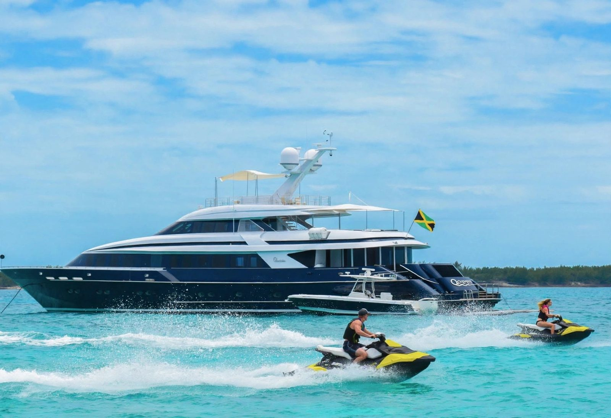

Jet-ski
🕘 9 h – 17 hSensations fortes sur l’eau turquoise. Casque et gilet fournis.
Voir les jet-skis
Réservés en quelques minutes : choisissez votre bateau, puis envoyez votre demande sur WhatsApp. Nous confirmons la disponibilité.
Voir nos bateauxSensations fortes sur l’eau turquoise. Casque et gilet fournis.
Voir les jet-skisUne sortie en mer confortable, entre amis ou en famille.
Voir le yachtNos bateaux circulent dans le périmètre d’Assinie, sur la côte est de la Côte d’Ivoire.
Voir la carteVotre bateau et la durée souhaitée.
Votre demande part sur WhatsApp, déjà rédigée.
Nous confirmons, puis vous profitez de la mer.